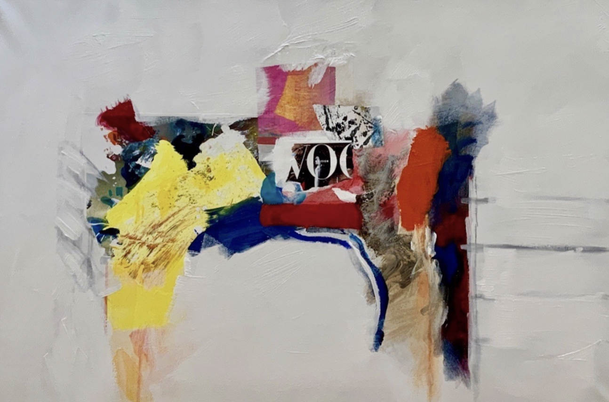

Charles D. Tarlton
Northampton, Massachusetts, USA
British Vogue by Ann Knickerbocker

This feels like an open white sky and the archway that eventually appeared was totally unplanned. I like to think it's mirrors reflecting sunlight where the yellow showed up.
—Ann Knickerbocker
1
We had come to London to see the Constables at Victoria and Albert, National Gallery, and the Tate. We were staying in the Hotel Russell on Russell Square, and planning to eat out that night at Nopi's, at the little bar-seats in the back. But, first, I had to get a proper English cap. We took a cab to Bates's hat store in Princes Arcade near the corner of Bury Street. It's funny how in old cities like London, Milan, Paris, and even Dublin there are these traditional arcades and galleries of shops. You duck into a kind of tunnel lined with shops between streets. We ate a fabulous dinner in Lyons once, in a little restaurant divided in two by an arcade of shops. The drapes on the windows were brilliant red and the plastered walls a ruffled yellow. I dream sometimes about arcades and galleries, curious where they lead.
in a dream, arcades
being drilled through everywhere
clandestine, secret
galleries leaving blood and
furry streaks along the walls
it was meant to be
happy! Can't you see the blue
and white striped ribbons?
what does it matter if it
leads nowhere? It’s wide open
variegated
tweed caps, the ones called Newsboy
you pull them down low
a little more on one side
it's right out of the movies
2
Alone in his big house, Jean des Esseintes (Huysmans's hero in À rebours) creates a mechanism in which (to keep it simple) piano-like keys were connected by little pipes (or something) to different flavors of liqueur so that when specific combinations of notes were played, different mixtures of liqueur came down for drinking. So, you could drink, conceivably, Violetta's solo in Act III of La Traviata or Mick Jagger's Under My Thumb. Or imagine that the music (or the cordials) were tied to colors, like the ripe reds and yellows in the abstracted Vogue, the hot little ideas you get sipping, and flipping through the pages.
if a sentence were
made and the predicate was
that yellow, its scrapes
of rust like music frozen
before that whisper of Vogue
you could sing the fact
of the chattering chorus
of colors reaching
across to make the arching
bridge poem of brilliant color
so, then, you tell me
what it means! Translate object
into more objects
a mere look into study
tendering us your judgment
3
First of all, there is an arch of sorts, rendered accidentally or on purpose doesn't seem to matter, made of color fragments in all sizes and shapes, like dresses that have been tried on, rejected, and thrown across a chair. Each swatch of color is slathered on, the brush all but accidentally accounting for the shape, each yellow, red, blue-shadow, pink and gray. In turn, each swatch pulls and holds our eye for its second, but over and over the arch/non-arch lures the eye back, questioning the imagination to declare just what this is. The whole thing nervously defies the surrounding weight of white, which is the dominant color here, a white all the whiter for the persistence of the colors trying to draw our attention away.
abstract painting has
its hand clasped firmly over
our mouths, muffling
gasps. It's not really an arch
your brain sets off rummaging
for what to call it
to satisfy your brain's need
that it be something
and right then it comes to life
the painter and the viewer
locked in an embrace
working eagerly to make
the painting fit in
to painting in general
lean back and take a deep breath
Note: Ann Knickerbocker, British Vogue (acrylic, pencil, collage, and monotype on canvas, 24" x 36", 2019).